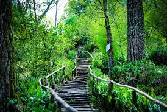
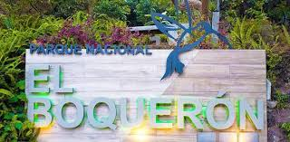

PARQUE NACIONAL EL BOQUERÓN
 El Boquerón, un verdadero oasis natural en medio de la urbe más grande de El Salvador, ubicado en la cima del volcán de San Salvador.
Para los amantes del senderismo, es perfecto realizar una expedición, de lo contario, también puedes disfrutar de la gastronomía y el tranquilidad que te ofrece la zona, experiencias no sólo durante el día, sino también por las noches.
El Parque Nacional El Boquerón se sitúa en el cráter del volcán de San Salvador, es un área protegida que cuenta con una gran diversidad de fauna y flora.
Con senderos señalizados, y una caminata de unos 20 a 25 minutos hacia el cráter, descubriras que el área tiene tres miradores en ángulos diferentes, donde puedes observar El Boqueroncito, un cráter de menor tamaño (37 metros de altura aprox.) y las laderas donde se cultivan flores y frutas de clima templado.
Además, en la carretera encontrarás bellos miradores, restaurantes y cafés con vistas espectaculares de San Salvador, el Lago de Ilopango y el volcán Chinchontepe, lugares donde también disfrutarás de una caliente taza de café y otras bebidas como: refrescos naturales y hasta los vinos más sofisticados, perfectos para ser acompañados por la amplia gastronomía, que el parque te ofrece.
Tu destino es el Parque Nacional El Boquerón, los horarios son de 8:00 a.m. a 5:00 p.m. El costo de entrada para salvadoreños es de $1 y para extranjeros $2. Niños menores de 6 años entran gratis, igual que los mayores de 60.